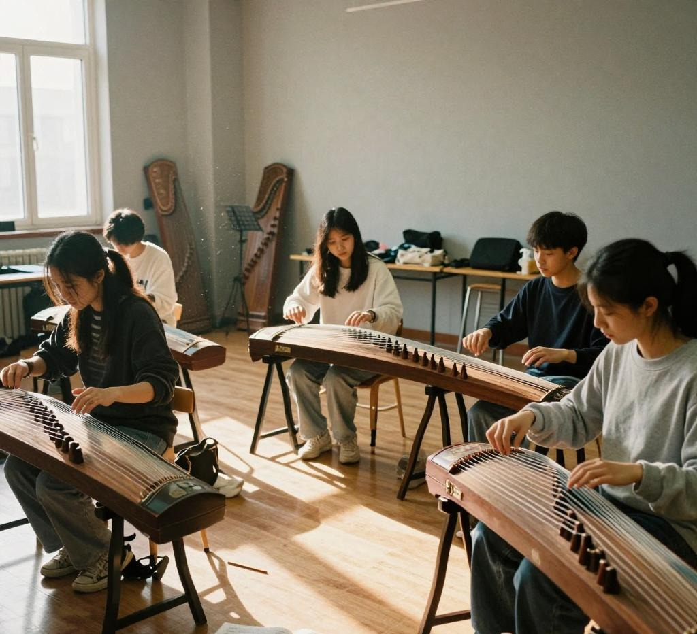

零基础友好
不设门槛，从持琴姿势、音阶练习开始，社团提供公用琴供新手初期使用，不用自备乐器。
以筝为媒，传承中华传统民乐文化
在校园的艺术长廊深处，有这样一方属于弓弦与共鸣的小天地——弦韵大提琴社。这里聚集着一群热爱大提琴的年轻人，他们有的是拥有多年演奏经验的"资深琴友"，有的是刚接触大提琴不久的新鲜面孔，还有不少从其他乐器跨界而来的音乐爱好者，因为对大提琴深沉、温暖的音色的共同向往，走到了一起。
大提琴社团成立至今，始终坚持"以琴会友，以声传情"的理念，不设过高的入门门槛，也不刻意追求专业级的演奏技巧，而是希望为所有喜爱大提琴的人提供一个可以安心拉琴、自由交流的空间。在这里，你不必担心自己的按弦姿势不够标准，也不必因为拉错一个音而感到尴尬，每一次弓弦的触碰，都是一次与音乐对话的机会。社团的日常氛围轻松而包容，大家会一起分享新学会的曲目，交流练琴时遇到的小困扰，也会在午后的阳光里，合奏一段舒缓的旋律。
无论你是从小学习提琴的老手，还是从未碰过弦乐的零基础新人，都能在这里找到属于自己的位置。我们不追求所有人都成为专业演奏者，只希望让大提琴这把"最接近人声的乐器"，成为你大学生活里温暖的陪伴。一弓一弦，以琴会友；温暖相伴，共奏华章。
不设门槛，从持琴姿势、音阶练习开始，社团提供公用琴供新手初期使用，不用自备乐器。
每周两个晚上活动室开放，老社员与指导老师轮流坐班，帮你解决练琴中遇到的各种小问题。
每月一次草坪音乐沙龙，每学年年末有专属汇报音乐会，每个人都有上台展示的机会。
2026 年春季学期 · 日常练习 / 合奏排练 / 户外沙龙 / 汇报演出
为了让不同基础的社员都能找到适合自己的参与方式，社团设置了丰富且层次分明的活动内容，时间大多安排在晚自习之后与周末，尽量避开同学们的专业课时间。
日常基础练习：每周固定两个晚上开放社团活动室，安排有经验的老社员和指导老师轮流坐班，帮助零基础的同学熟悉持琴姿势、音阶练习，也为有一定基础的社员提供曲目指导，大家可以根据自己的时间自由前来，不用受到严格的考勤约束。
主题合奏排练：每两周开展一次合奏主题活动，从简单的二重奏、三重奏，到编排完整的大提琴重奏曲目，我们会根据每个人的演奏水平分配声部，哪怕是刚入门的社员，也能在合奏里找到属于自己的位置，体会到多人协作演奏的乐趣。
户外音乐沙龙与年度汇报演出：每个月选择一个天气晴好的周末，在校园的草坪、湖边举办小型音乐沙龙；每学年年末，我们会举办一场属于社团自己的汇报音乐会，从选曲、排练到现场布置，全部由社员共同完成。所有活动信息会提前在社团群内通知，大家可以根据自己的时间自愿参与。
| 大提琴社 2026 年春季学期活动安排表 | |||
|---|---|---|---|
| 时间 | 活动内容 | 地点 | 形式 |
| 三月 | 新成员见面会 · 社团与琴室导览 | 弦乐活动室 B201 | 见面交流 |
| 大提琴基础教学公开课（持琴 · 站姿 · 运弓基础） | 教学公开课 | ||
| 四月 | 每周琴房开放日（零基础 / 进阶分组指导） | 弦乐活动室 B201 | 日常练习 |
| 合奏排练 · 二重奏与三重奏入门 | 弦乐活动室 B201 | 合奏排练 | |
| 五月 | 草坪音乐沙龙 · 户外即兴演奏 | 湖边大草坪 | 户外沙龙 |
| 校园公益演出 · 重奏曲目排练 | 对外展演 | ||
| 兄弟院校音乐交流 · 曲目联排 | 大学生活动中心 | 校际交流 | |
| 六月 | 社内汇报演出 · 年末音乐会彩排 | 大礼堂排练厅 | 汇报演出 |
| 学期总结 · 社员分享茶话会 | 弦乐活动室 B201 | 社团活动 | |
温馨提示：表中「新成员见面会」与「大提琴基础教学公开课」在同一间教室——弦乐活动室 B201 举行，活动室课后开放，可自行练习。具体时间以社团群内通知为准。
弓弦起落处，皆是少年模样
弦韵大提琴社的风采，藏在日常练琴的朝夕里，也绽放在每一次登台的瞬间。夕阳照进弦乐活动室，几把大提琴静静靠在琴架上，弓弦摩擦间，低沉温暖的琴声此起彼伏，这是我们最常见的模样。
日常练习时，有人独自对着谱子反复打磨一段旋律，指尖在弦上来回滑动；有人三两结伴，互相纠正姿势、核对音准；休息间隙，有人即兴拉一段舒缓的小曲，引得周围同学静静聆听。排练合奏的时候，大家专注地看向统一的乐谱，跟着指挥调整速度，从一开始声部杂乱，到最后琴声相融、低沉而饱满，每一点进步都值得记录。
在校园各大舞台上，我们也曾留下许多动人的时刻。迎新晚会上，我们用大提琴版的流行旋律迎接新同学；公益义卖现场，重奏曲目为路过的师生带去片刻宁静；兄弟院校交流中，我们带着改编曲目登台，和其他学校的大提琴爱好者互相切磋。一曲终了，台下掌声响起，是对我们长久排练最好的肯定。
风采不止在于完美的演奏。是新手第一次完整拉完一首曲子时眼里的光亮，是大家互相帮忙调琴码、擦松香的温暖，是草坪上即兴合奏时风卷着梧桐叶吹过琴弦的瞬间。这些细碎又温柔的瞬间，共同组成了大提琴社独有的风景。我们以琴会友，把大提琴深沉温暖的音色带到校园的各个角落。

日常演奏 · 弦乐活动室 点击查看活动介绍 →《弦韵时刻》社团短片 · 若上方播放器未显示，可点此直接打开视频观看。
弓弦朝夕，温暖相伴（节选）
大提琴社的日常从来不是刻板的"练琴打卡"，而是由一个个带着松香气息的细碎小故事拼接而成的，每一段都藏着年轻人和琴弦碰撞出的温柔火花。
每周二和周四的晚课结束后，社团活动室里总会准时出现三个身影：学机械工程的男生阿泽，学中文的女生小晚，还有刚上大一的零基础新生阿柚。阿泽总背着装着笔记本电脑和大提琴的双肩包，刚从实验室出来的他，外套袖子上还沾着一点实验服的蓝色痕迹，他说拉琴的一小时是一天里唯一不用对着数据和图纸的时间，指尖按在琴弦上的瞬间，脑子里乱转的公式会自动慢下来。小晚总带着一本夹着书签的诗集，休息间隙会念几句和旋律适配的短诗，上次他们合奏《天鹅》时，她轻声念起里尔克关于黄昏的句子，整个房间的琴声都跟着软了下来。
阿柚刚加入时连持琴姿势都要反复调整，按弦的指尖磨出了三个小茧，每次疼得皱眉时，另外两个人就会停下来陪她练十分钟的"音阶小游戏"，把枯燥的基础练习变成带节奏的接龙，现在她已经能完整拉出《小星星变奏曲》，第一次拉完的那天，三个人对着琴谱开心得碰了碰琴弓。
入秋之后社团总爱组织户外沙龙，上周六的下午，大家把几把大提琴搬到了湖边的大草坪上，本来只是几个人随便合奏几段简单的旋律，没想到路过的几个同学慢慢围了过来。有个抱着吉他的男生主动提出要和大家合奏改编版的《遇见》，没有提前排练，大家凭着对旋律的默契调整声部，大提琴的低音托着吉他的分解和弦，风卷着梧桐叶从琴弦边吹过，路过的小猫都蹲在旁边听了半首。结束之后有个围观的同学过来问能不能加入社团，说自己一直觉得大提琴是"很高很远的乐器"，今天坐在草坪边听，才发现它的声音像秋天晒过的毛毯一样暖。
去年社团的年末汇报演出，有个节目让台下的人印象很深：那是一首改编的四重奏，最后一段的低音声部，是由三个零基础社员共同完成的。为了让刚入社三个月的他们也能站上舞台，大家特意重新编排了曲目，把原本复杂的低音声部拆成了三个简单的小节，每个人只需要负责自己最熟练的那一段。演出当天，三个人站在舞台上，虽然指尖还有点微微发抖，但合在一起的琴声稳稳托住了整个旋律，台下的社员们都跟着轻轻打拍子，没有人在意他们拉得是不是百分百完美，大家都知道，这一段琴声里藏着好多个晚上的陪伴和鼓励。
这些没有聚光灯的日常，让大提琴不再是陈列在展厅里的高雅符号，变成了这群年轻人青春里触手可及的温暖陪伴。大家因琴相遇，彼此陪伴，在一弓一弦之间，收获技艺，也收获珍贵的友谊。
热爱就是最好的入场券
如果你也曾经被大提琴深沉温暖的音色打动，如果你想找一个地方慢慢学会演奏一首喜欢的曲子，如果你想认识一群同样热爱音乐的伙伴，欢迎加入弦韵大提琴社！我们不设置硬性门槛，有无基础都可以报名。
报名之后，我们会收集你的基础信息，方便后续社团联络、分组教学和活动通知。你可以选择自己感兴趣的方向：独奏练习、合奏演出、乐曲鉴赏、户外沙龙等。如果你没有大提琴基础也不用担心，社团会为新社员提供公用琴，统一安排零基础教学。加入社团之后，希望你可以合理安排时间，尽量参与社团常规活动，和社员友好相处，互相包容。